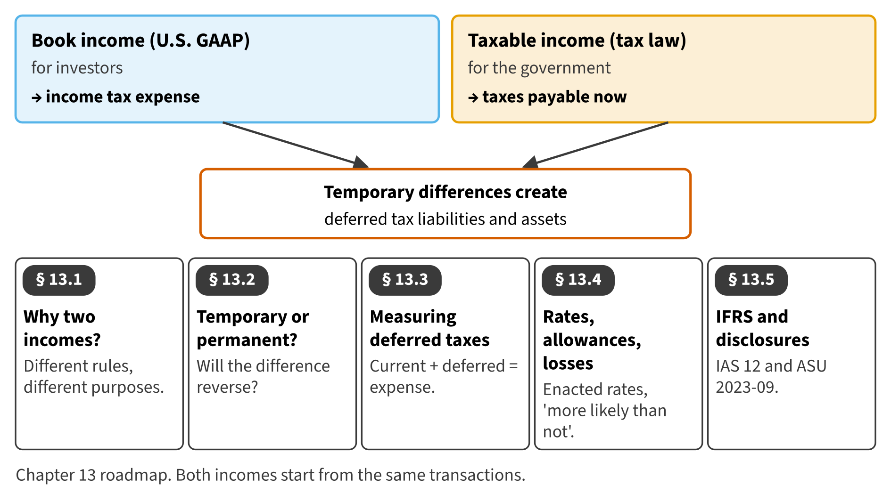

Part III · Revenue, liabilities and income measurement · Chapter 13
Income Taxes
ضرائب الدخل
Orontes reported income tax expense of $989,700 for 2025, but it paid only $839,700 in cash. This chapter explains why the two numbers differ, and why Orontes shows a deferred tax liability on its balance sheet.

Start here
Then
What this chapter is tested on
| LOS | Official statement (ICMA, 2024) | In plain words | Depth here |
|---|---|---|---|
| A.2.q | demonstrate an understanding of interperiod tax allocation/deferred income taxes | Explain interperiod tax allocation and compute current and deferred income tax expense. | Full treatment |
| A.2.s | differentiate between temporary differences and permanent differences, and identify examples of each | Distinguish temporary from permanent differences, with examples. | Full treatment |
| A.2.r | distinguish between deferred tax liabilities and deferred tax assets | Distinguish deferred tax liabilities from deferred tax assets, including valuation allowances. | Full treatment |
| A.2.ff | identify and describe the following differences between U.S. GAAP and IFRS: (i) expense recognition, with respect to share-based payments and employee benefits; (ii) intangible assets, with respect to development costs and revaluation; (iii) inventories, with respect to costing methods, valuation, and write-downs (e.g., LIFO); (iv) leases, with respect to lessee operating and finance leases; (v) long-lived assets, with respect to revaluation, depreciation, and capitalization of borrowing costs; and (vi) impairment of assets, with respect to determination, calculation, and reversal of loss | State the main differences between ASC 740 and IAS 12. | Preview (full in Chapter 17) |
The official statements are quoted from the ICMA Learning Outcome Statements (effective September 1, 2024). The plain-words column restates them in simpler English. The exam may test any outcome up to Level C.
What you already know
IAS 12 uses the same balance sheet approach as U.S. GAAP. The differences are in the details: how deferred tax assets are recognized, which tax rates are used, and some exemptions. Section 13.5 lists them.
The 8 key terms
Every scene has Check Answers and Try Again. Try Again reshuffles rather than revealing. When you are wrong, the first thing you read is the reason for the option you chose, taken from the book's own explanations. Progress is saved in this browser.